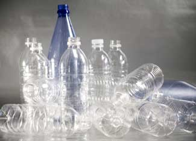

I remember when the name of the game at my gym was pump’n’swig. Weight lifters and treadmill sloggers routinely carried with their sweat towels expensive water in plastic bottles.
Drinking commercial water was the cool thing. In 2006, Americans bought 32.6 billion single-serving bottles of water, and another 34.6 billion larger bottles.
With a slew of brands for basically the same product, image marketers have pushed the envelope - the bottle itself. My favorite absurdity: “Bling H2O,” with the motto “More than a Pretty Taste.” You can buy this water in a “Limited Edition” frosted-glass bottle encrusted with crystals for $40.
The surprising truth is that an estimated 25 percent to 40 percent of bottled water comes from public drinking reservoirs. Pepsico’s Aquafina label shows high-peaked mountains, but the water is from municipal systems, including that of Ayer, Mass., a town next to a military base and a short drive from Boston. Coca-Cola’s brand, Dasani, also uses municipal systems.
I remember a Dennis the Menace cartoon showing Dad, dazed and bleary-eyed at 3 a.m., holding out a glass of water. Dennis says, “That’s bathroom water! I wanted kitchen water!”
It’s all in the marketing.
At some restaurants, “water sommeliers” have pushed $75-a-bottle water for each course. I once took my husband for his birthday to a restaurant where the waiter asked if we would like our water bottled or - with curled lip - “native.” That convinced us. We absolutely had to go local.
We still laugh about that.
For years, the joke’s been on consumers. We spend all that money on water and plastic, and toss the plastic. It litters America from sea to bottle-bobbing sea.
“We estimate that fewer than 20 percent of those get recycled,” says Betty McLaughlin, executive director of the Container Recycling Institute.
Elizabeth Royte, author of the highly readable Bottlemania: How Water Went on Sale and Why We Bought It says America uses about 17 million barrels of oil each year to make plastic water bottles.
“If you have good tap water, if bottled water is redundant, why wouldn’t you go for the low-impact option?” she asks. “Bring your water over to the Stairmaster in a reusable bottle.”
That message finally seems to be getting through. Today I see the beginnings of a bottled-water backlash. At my gym, almost no one wants to be seen swigging from throw-away plastic anymore.
Some restaurants have abandoned bottled water. New York City’s Italian restaurant Del Posto, where it’s easy to drop hundreds of dollars on dinner for two, has a 61-page wine list with many bottles priced over $1,000, but you can’t buy bottled water at any price. Says one of the restaurant’s owners: “To spend fossil fuel trucking water around the world is absurd.”
At colleges nationwide, students take the “no bottled water” pledge. Realizing that spending taxpayer funds on bottled water is careless environmental stewardship, Illinois has canceled contracts for bottled water. The city governments of Fayetteville, Ark., and Albuquerque, N.M., won’t buy the stuff. Chicago has a tax of 5 cents per bottle to cover disposal costs. Michigan may extend its 10-cent deposit on soft-drink bottles to bottled water.
For a while, bottled water had a good thing going. In 2006, the industry worldwide grew 7 percent in dollar sales. Some forecasters suggested 40 percent growth over the next five years.
But recently, those phenomenal growth rates have slowed worldwide.
“Bottled water sales have gone flat for the first time in 30 years, at both Coke and Pepsi,” says ad executive Erik Yaverbaum, founder of Tappening, which encourages people to drink tap water. “I think people are realizing they are wasting money buying water that’s the same as what comes from their tap.”
If I’m going to the gym now, I drink a glass of water before I go. If I’m going on a long car trip, I fill up a clean glass jug. My mom did that. And we never went thirsty.
|
 PHOTO BY DENISE TORRES/ISTOCKPHOTO What's wrong with bottled water? One problem is that not nearly enough of those plastic bottles actually get recycled. |
|
|